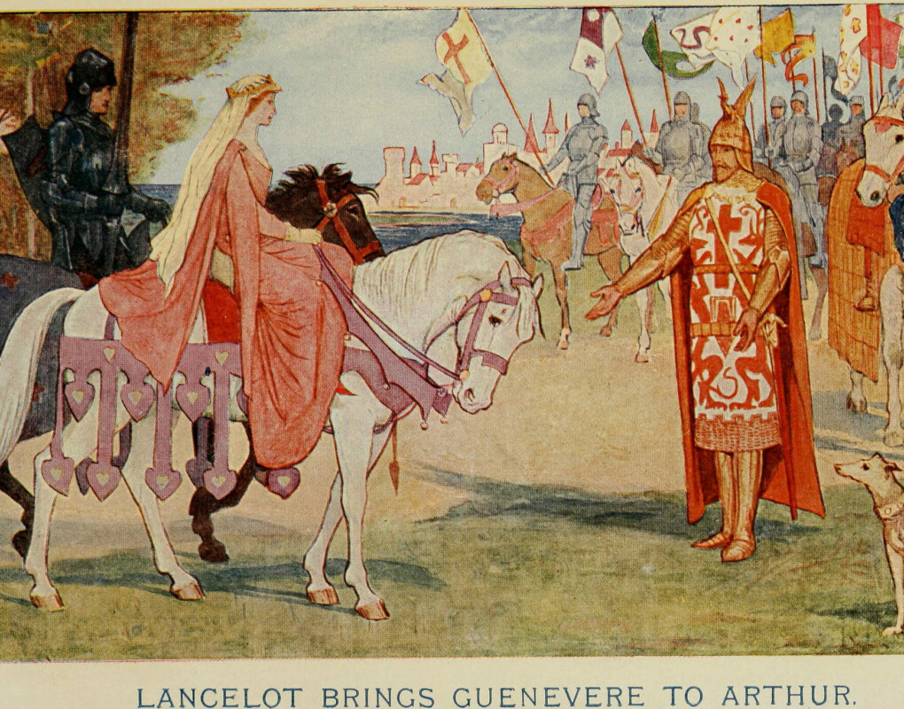

"Arthur Pendragon" redirects here. For other uses, see Arthur Pendragon (disambiguation) and King Arthur (disambiguation). .
King Arthur (Welsh: Brenin Arthur; Cornish: Arthur Gernow; Breton: Roue Arzhur; French:
Roi Arthur) was a legendary king of Britain. He is a folk hero and a central figure in the
medieval literary tradition known as the Matter of Britain.
Main article: Historicity of King Arthur
King Arthur was traditionally accepted as a historic person. He was originally thought to have been an ancient British war commander and, at least from the early 12th century, a king. There was, however, much discussion regarding his various deeds, and contemporary scholars and clerics generally refuted the popular medieval belief in his extreme longevity and future return. From the eighteenth century onwards, there has been academic debate about the historicity of Arthur.[2]